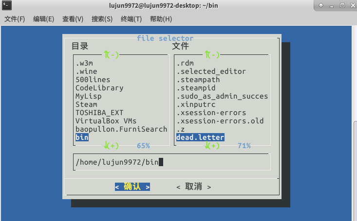
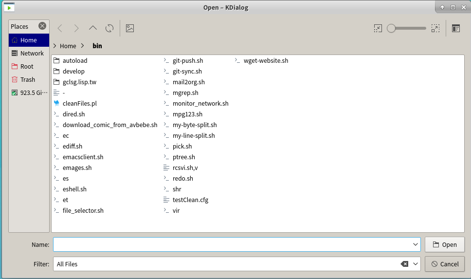
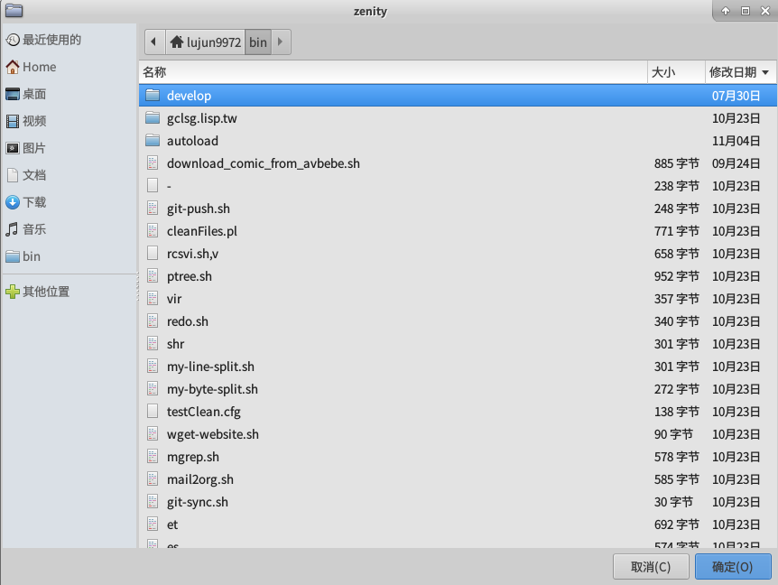

图形环境下的shell编程
select
select命令可以创建很简单的菜单,然后获取输入的答案.
select命令的格式为:
select variable in list do commands done
其中list参数是由空格分隔的文本选项列表,这些列表构成了整个菜单. select命令会将每个列表现实成一个带编号的选项,然后为选项显示一个由PS3环境变量定义的提示符.
例如我们可以创建一个简单的文件选择脚本:
if [ $# -eq 0 ];then file=$(pwd) else file=$1 fi if [ -d $file ];then select f in $(ls $file) do exec $0 $file/$f done else echo $file fi
lujun9972@lujun9972-desktop:~$ file_selector.sh bin 1) - 17) git-sync.sh 2) autoload 18) mail2org.sh 3) cleanFiles.pl 19) mgrep.sh 4) develop 20) monitor_network.sh 5) dired.sh 21) mpg123.sh 6) download_comic_from_avbebe.sh 22) my-byte-split.sh 7) ec 23) my-line-split.sh 8) ediff.sh 24) pick.sh 9) emacsclient.sh 25) ptree.sh 10) emages.sh 26) rcsvi.sh,v 11) es 27) redo.sh 12) eshell.sh 28) shr 13) et 29) testClean.cfg 14) file_selector.sh 30) vir 15) gclsg.lisp.tw 31) wget-website.sh 16) git-push.sh #? 2 1) git-pull.sh 2) study.sh #? 1 bin/autoload/git-pull.sh
dialog
dialog能够使用ANSI转义控制字符从文本环境创建标准的窗口对话框.
下面是用用dialog来重写的file_selector.sh
if [ $# -eq 0 ];then file=$(pwd) else file=$1 fi file=$(dialog --title "file selector" --stdout --fselect $file 10 50) if [ -d $file ];then exec $0 $file else echo $file fi

tput
tput 命令将通过 terminfo 数据库对您的终端会话进行初始化和操作.
通过使用 tput,您可以更改几项终端功能:如移动或更改光标、更改文本属性，以及清除终端屏幕的特定区域等.
下面是一个例子:
#!/bin/bash BOLD=$(tput bold) REV=$(tput rev) NORMAL=$(tput sgr0) CURSOR_OFF=$(tput civis) CURSOR_ON=$(tput cnorm) tput init tput clear echo $CURSOR_OFF tput cup 2 15 echo "${BOLD}粗体效果{NORMAL}\n" echo "${REV}反转效果${NORMAL}" echo $CURSOR_ON
notify-send
notify-send让你通过通知进程发送一个桌面通知给用户.
例如下面是一个检测网络的脚本.
#!/bin/bash target="www.baidu.com" port=80 interval=60 # 秒 function live_p() { local remote=$1 local port=$2 if timeout 5 echo >/dev/tcp/$remote/$port;then echo "网络通了!" else echo "网络不通了!" fi } while : do current_state=$(live_p $target $port) if [ "$current_state" != "$old_state" ];then notify-send $current_state fi old_state=$current_state; sleep $interval done
网络不通的情况下,它会显示一个窗口告诉你"网络不通了!",网络恢复之后,它又会显示一个窗口告诉你"网络通了"
kdialog
kdialog为KDE桌面提供了类似dialog式的标准窗口. 其生成的窗口能和其他KDE窗口很好的融合.
关于kdialog的使用方法可以参见https://techbase.kde.org/Development/Tutorials/Shell_Scripting_with_KDE_Dialogs
kdialog的file_selector.sh可以是这样的
if [ $# -eq 0 ];then file=$(pwd) else file=$1 fi if [ -d $file ];then file=$(kdialog --getopenfilename $file) fi echo $file

zenity
zenity 是gnome版的dialog. 它针对不同的对话框选项有不同的参数:
对话框选项
- --calendar
- 显示日历对话框
- --entry
- 显示文字输入栏对话框
- --error
- 显示错误信息对话框
- --file-selection
- 显示文件选择对话框
- --info
- 显示信息对话框
- --list
- 显示清单对话框
- --progress
- 显示进度指示窗
- --question
- 显示提问信息对话框
- --text-info
- 显示文字资信对话框
- --warning
- 显示警告信息对话框
一般选项
- --title=标题
- 指定对话框的标题
- --window-icon=图示路径
- 指定视窗使用的图示
- --width=宽度
- 指定宽度
- --height=高度
- 指定高度
日历选项
- --text=STRING
- 指定对话框中的文字
- --day=INT
- 指定日历中的日期
- --month=INT
- 指定日历中的月份
- --year=INT
- 指定日历中的年份
- --date-format=STRING
- 指定回传的日期格式
文字输入栏选项
- --text=STRING
- 指定对话框中的文字
- --entry-text=STRING
- 指定输入栏中的文字
- --hide-text
- 隐藏输入栏中的文字
错误信息选项
- --text=STRING
- 指定对话框中的文字
有关文件选择的选项
- --filename=文件名称
- 指定文件名称
- --multiple
- 允许同时选择多个文件
- --separator=分隔字符
- 指定分隔输出结果的字符。
信息选项
- --text=STRING
- 指定对话框中的文字
清单选项
- --column=STRING
- 指定栏位标题
- --checklist
- 第一栏使用独立选择按钮
- --radiolist
- 第一栏使用多项选择按钮
- --separator=分隔字符
- 指定分隔输出结果的字符
- --editable
- 可以更改文字
进度选项
- --text=STRING
- 指定对话框中的文字
- --percentage=INT
- 指定开始时的百份比数值
- --pulsate
- 填满进度列
- --auto-close
- 当进度达到100% 时关闭对话框
提问选项
- --text=STRING
- 指定对话框中的文字
文字选项
- --filename=文件名称
- 从文件中载入文本
- --editable
- 可以更改文字
警告信息选项
- --text=STRING
- 指定对话框中的文字
GTK+ 选项
- --gdk-debug=标签
- 准备设定的gdk 调试标签
- --gdk-no-debug=标签
- 准备去除的gdk 调试标签
- --display=画面
- 准备使用的 X 画面
- --sync
- 进行 X 同步呼叫
- --name=名称
- 视窗总管所需的程式名称
- --class=类别
- 视窗总管所需的程式类别名称
--gxid-host=主机 --gxid-port=端口号
- --gtk-debug=标签
- 准备设定的gtk+ 调试标签
- --gtk-no-debug=标签
- 准备去除的gtk+ 调试验标签
- --g-fatal-warnings
- 将所有警告信息作为严重错误处理
- --gtk-module=模块
- 载入额外的 Gtk 模块
zennity版本的file_selector.sh是这样的
if [ $# -eq 0 ];then file=$(pwd) else file=$1 fi if [ -d $file ];then cd $file file=$(zenity --file-selection) fi echo $file
